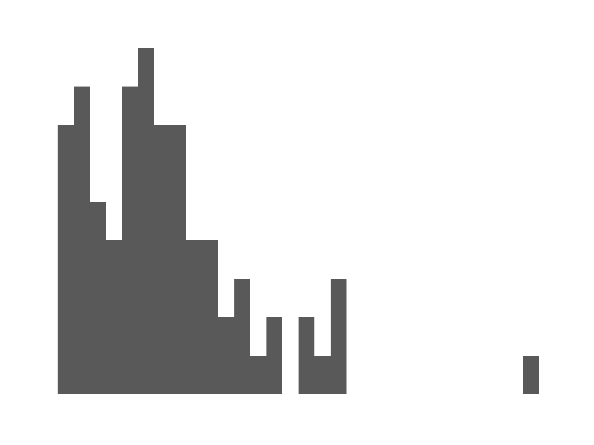
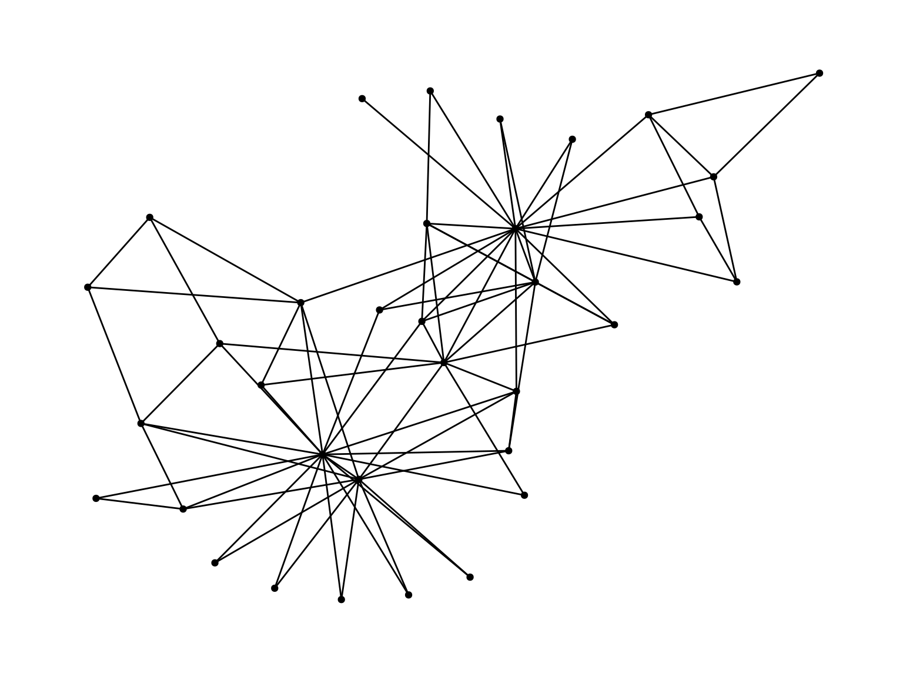
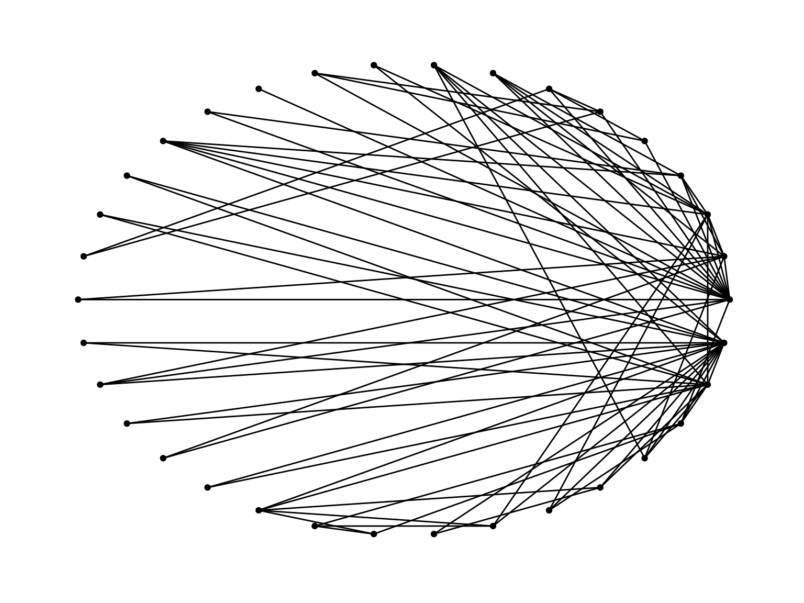
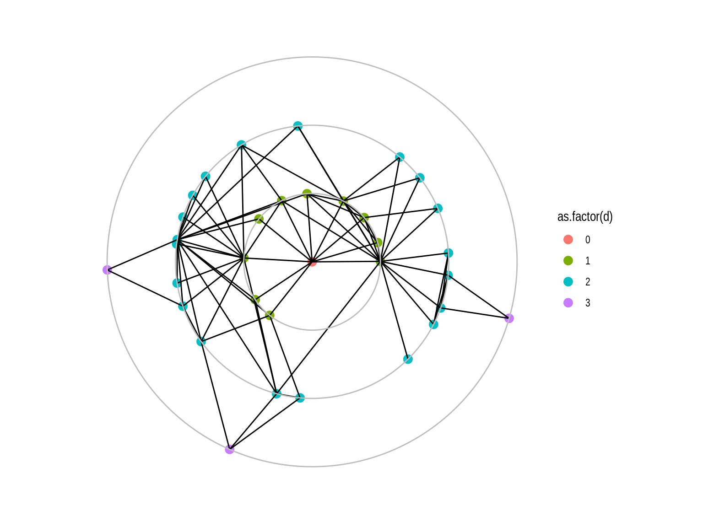
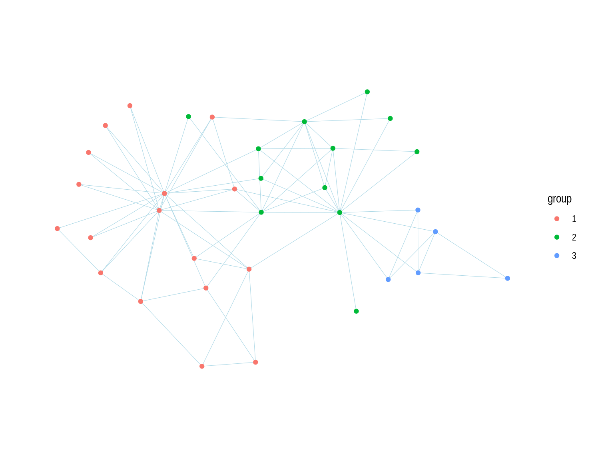

## # A tbl_graph: 34 nodes and 78 edges
## #
## # An undirected simple graph with 1 component
## #
## # Node Data: 34 x 1 (active)
## degree
## <dbl>
## 1 16
## 2 9
## 3 10
## 4 6
## 5 3
## 6 4
## # … with 28 more rows
## #
## # Edge Data: 78 x 2
## from to
## <int> <int>
## 1 1 2
## 2 1 3
## 3 1 4
## # … with 75 more rowscreate_notable('zachary') %>%
activate(edges) %>%
mutate(bw = centrality_edge_betweenness()) %>%
ggplot() +
geom_histogram(aes(x=bw))## `stat_bin()` using `bins = 30`. Pick better value with `binwidth`.
Three parts:
Lots of layout options, ggraph can pick for you, or you can look through some here and here.


create_notable('zachary') %>%
ggraph(layout = 'focus', focus = 3) +
geom_node_point() +
geom_edge_fan() +
ggforce::geom_circle(aes(x0 = 0, y0 = 0, r = r), data.frame(r = 1:3), colour = 'grey') +
coord_fixed() +
theme_graph()
The primary way that you will gain understanding or make an argument through network plots is through changing the color, size, etc. of nodes and edges.
If you want to change things based on a value that changes, then you need to put it in a “mapping”. This is the first “argument” to the node or edge geom, and starts with aes(. Aesthetics that apply to all of the nodes or edges appear outside of the mapping.
create_notable('zachary') %>%
activate(nodes) %>%
mutate(group = as.factor(group_infomap())) %>%
ggraph() +
geom_edge_fan(width = .2, color = 'lightblue') +
geom_node_point(aes(color = group)) +
coord_fixed() +
theme_graph()## Using `stress` as default layout